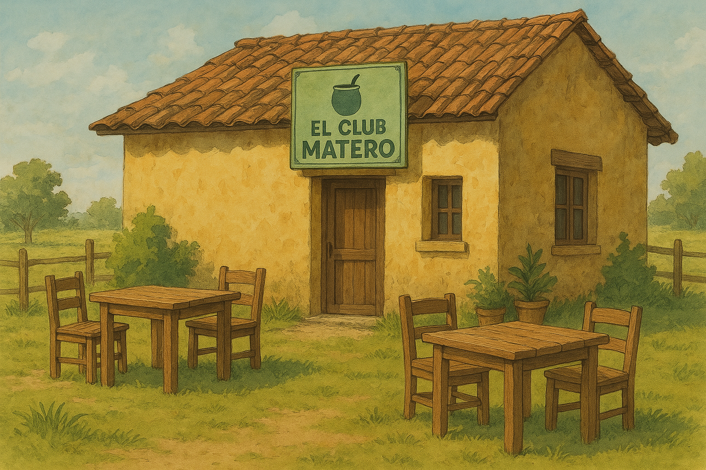

Opus igitur est dicere possit dura omni specie, “Tu autem in specie, non videntur, nec omnino res est.” Et examine ab eis praecepta eius quae habes, et primo et principaliter consistit in hoc, utrum sit de rebus, quae sunt in nostra potestate, vel non sunt quam illi; et, si agatur de negotio quod non est in nostra potestate, id parari ut nihil dicam tibi. Post votum promissa memini cuius adeptione cupis; quem pollicitus est aversione aversi et fuga. Qui autem de re desit libido frustra miseri qui incurrit odium sui obiecti. Si ergo illa tantum fastidium compesce contra naturalem usum habili, quem

Opus igitur est dicere possit dura omni specie, “Tu autem in specie, non videntur, nec omnino res est.” Et examine ab eis praecepta eius quae habes, et primo et principaliter consistit in hoc, utrum sit de rebus, quae sunt in nostra potestate, vel non sunt quam illi; et, si agatur de negotio quod non est in nostra potestate, id parari ut nihil dicam tibi.
